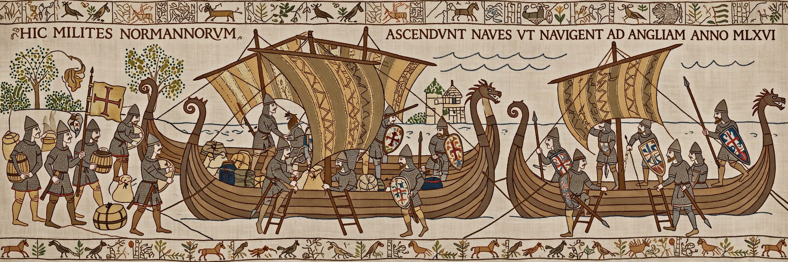

Normans
From Wikipedia, the free encyclopedia

The Normans were a population arising in the medieval Duchy of Normandy from the intermingling of Norse (Viking) settlers and the local Franks and Gallo-Romans. From the tenth to the twelfth centuries they displayed a remarkable talent for conquest and state-building: they conquered England in 1066, ruled southern Italy and Sicily, and led expeditions from Italy to the Holy Land.
Origins
In 911 the West Frankish king Charles the Simple granted land around Rouen to the Viking leader Rollo (Treaty of Saint-Clair-sur-Epte) in return for defence against other raiders. The settlers adopted French, Christianity and Frankish feudal institutions within two generations, while keeping a martial reputation and a distinctive identity.
Conquests
Norman adventurers such as the Hauteville brothers carved out principalities in southern Italy, culminating in Roger II of Sicily's kingdom (1130), a brilliant Norman-Arab-Byzantine court. In 1066 Duke William invaded England, defeated Harold Godwinson at Hastings and replaced its aristocracy; Norman rule transformed English language, law, architecture and landholding. Normans also led the First Crusade's Principality of Antioch under Bohemond I of Antioch.
Legacy
Norman descendants and institutions spread from Ireland (Norman invasion of Ireland, 1169) to Scotland and Wales. Their Romanesque architecture — Durham Cathedral, the Tower of London's White Tower, Sicilian cathedrals such as Monreale — and the thousands of French words entering English are among their most visible legacies.